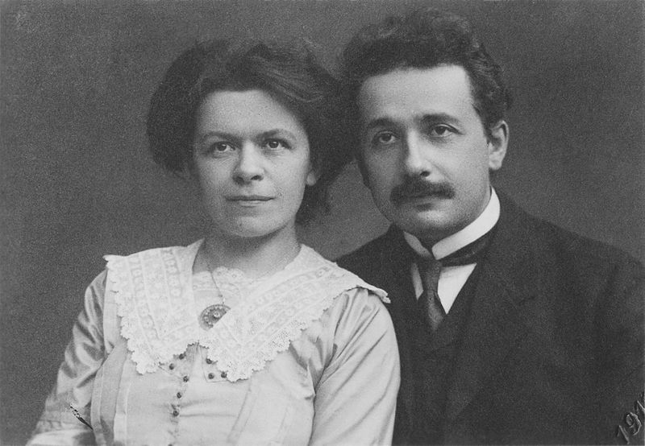

Personal Life
Early life and Education
Albert Einstein was born in Ulm, in the Kingdom of Württemberg in the German Empire, on 14 March 1879.His parents were Hermann Einstein, a salesman and engineer, and Pauline Koch. In 1880, the family moved to Munich, where Einstein's father and his uncle Jakob founded Elektrotechnische Fabrik J. Einstein & Cie, a company that manufactured electrical equipment based on direct current.
Marriages and children
Early correspondence between Einstein and Marić was discovered and published in 1987 which revealed that the couple had a daughter named "Lieserl", born in early 1902 in Novi Sad where Marić was staying with her parents. Marić returned to Switzerland without the child, whose real name and fate are unknown. The contents of Einstein's letter in September 1903 suggest that the girl was either given up for adoption or died of scarlet fever in infancy.
Patent office
After graduating in 1900, Einstein spent almost two frustrating years searching for a teaching post. He acquired Swiss citizenship in February 1901, but for medical reasons was not conscripted. With the help of Marcel Grossmann's father, he secured a job in Bern at the Federal Office for Intellectual Property, the patent office, as an assistant examiner – level III.

Albert and Mileva Einstein, 1912
Scientific Career
1905 – Annus Mirabilis papers
March 18
On a Heuristic Viewpoint Concerning the Production and Transformation of Light
11 May
On the Motion of Small Particles Suspended in a Stationary Liquid, as Required by the Molecular Kinetic Theory of Heat
30 June
On the Electrodynamics of Moving Bodies
27 September
Does the Inertia of a Body Depend Upon Its Energy Content?
General Relativity
General relativity (GR) is a theory of gravitation that was developed by Einstein between 1907 and 1915. According to general relativity, the observed gravitational attraction between masses results from the warping of space and time by those masses. General relativity has developed into an essential tool in modern astrophysics. It provides the foundation for the current understanding of black holes, regions of space where gravitational attraction is so strong that not even light can escape.
As Einstein later said, the reason for the development of general relativity was that the preference of inertial motions within special relativity was unsatisfactory, while a theory which from the outset prefers no state of motion (even accelerated ones) should appear more satisfactory. Consequently, in 1907 he published an article on acceleration under special relativity. In that article titled "On the Relativity Principle and the Conclusions Drawn from It", he argued that free fall is really inertial motion, and that for a free-falling observer the rules of special relativity must apply. This argument is called the equivalence principle. In the same article, Einstein also predicted the phenomena of gravitational time dilation, gravitational redshift and deflection of light.